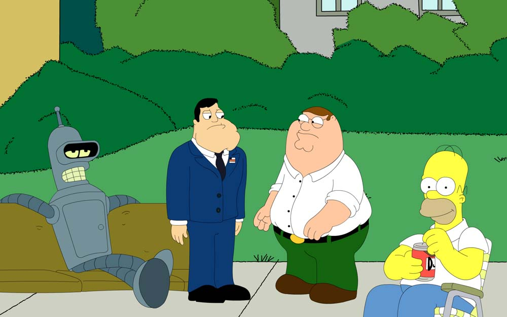
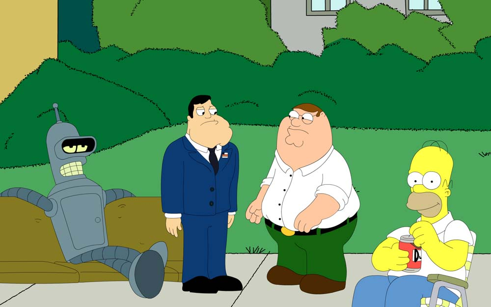

<head>
<script type="text/javascript" src="jquery-1.6.1.min.js"></script>
<script type="text/javascript" src="jquery.fotorama-0.2.js"></script>
<link rel="stylesheet" type="text/css" href="jquery.fotorama-0.2.css"/>
</head>
<body>
<div class="fotorama">
<img src="img/1.jpg"/>
<img src="img/2.jpg"/>
<img src="img/3.jpg"/>
</div>
</body>
$(".fotorama").fotorama();
No settings for cropping, easing, autoplay, preload, carousel follow and other noise! No problem with multiply galleries, any desired aspect ratio and size.
 



$("#fotorama-bw").fotorama({
transitionDuration: 0, // number, default: 250
thumbsHorizontal: true, // boolean, default: false
thumbsWithRatio: true, // boolean, default: false
caption: $("#fotorama-bw-caption") // jQuery, default: false
});


Заметки с тегом «фоторама» на моём блоге
@ Artem Polikarpov, artpolikarpov@gmail.com